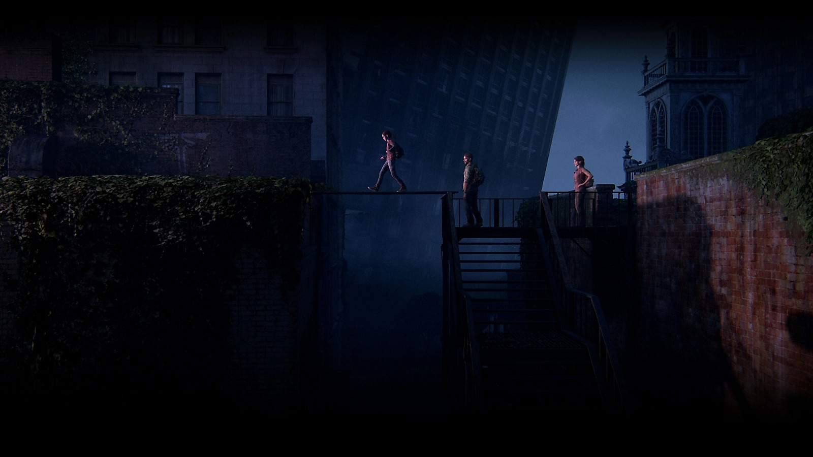
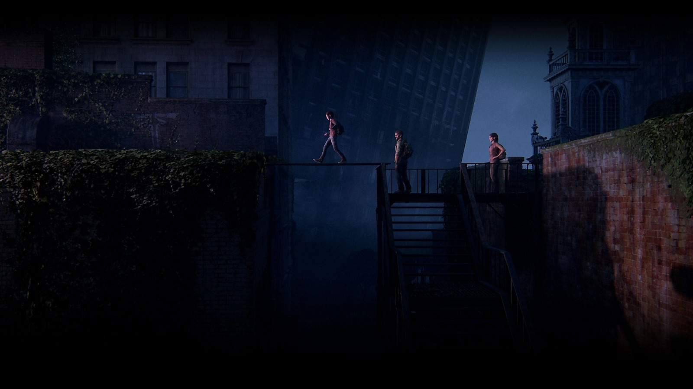
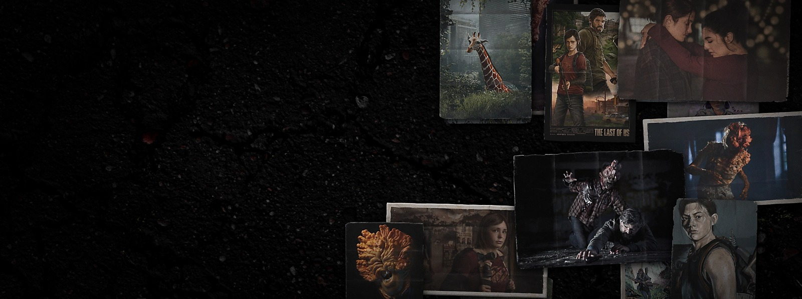
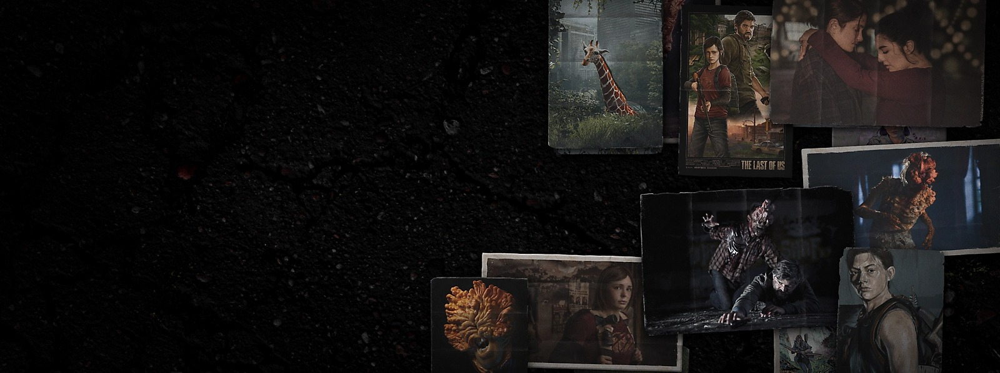

action
The Last of Us remastered
Winner of over 200 Game of the Year awards, The Last of Us™ has been rebuilt for the PlayStation®4 system.
Laat je verwonderen door de winnaar van meer dan 300 Game of the Year-prijzen, nu volledig geremasterd voor PS5®. Stort je opnieuw of voor het eerst in het verhaal van Ellie en Abby, met nieuwe speltypen, volledige integratie van de DualSense™ draadloze controller, visuele verbeteringen en meer. Nu verkrijgbaar.
Meer informatie 

Winner of a combined 500+ Game of the Year awards, The Last of Us
series is critically renowned for its emotional storytelling,
unforgettable characters, and suspenseful action-adventure gameplay.
Decades after the Cordyceps infection ravaged America, ruthless
factions and Infected present a constant threat to survivors. Rugged
smuggler Joel is tasked with escorting teenager Ellie to safety.
Although Joel is traumatized by his past, their brutal cross-country
journey gives him “something to fight for.”
5 years later, Joel and Ellie settle in Jackson, Wyoming. When a
harrowing incident rattles their community, Ellie embarks on a
relentless journey for justice and closure. The dangers she encounters
aren’t her only obstacles; she also must grapple with the
repercussions of her actions.
Play The Last of Us Part I, now available on PlayStation 5 and for PC,
and continue your journey with The Last of Us Part II Remastered on
PS5.
action
Winner of over 200 Game of the Year awards, The Last of Us™ has been rebuilt for the PlayStation®4 system.

action
Play as Joel, a smuggler tasked with escorting a teenage girl, Ellie, across a post-apocalyptic United States.
action
Experience Ellie and Abby’s emotional journeys, remastered for PS5®

action
Endure and survive. Relive the beloved game that started it all, rebuilt for the PlayStation®5 console, and now available for PC.
action
The Last of Us: Left Behind combines themes of survival, loyalty, and love with tense, survival-action gameplay in this critically acclaimed chapter.
action
Confront the devastating physical and emotional repercussions of Ellie's actions.
Go behind the scenes to discover how The Last of Us Part I was created, and learn how iconic scenes were adapted for the acclaimed live-action HBO series.


As PlayStation celebrates its 30th Anniversary, we’re excited to share some thrilling news with our PlayStation Plus members. To make this milestone even more special, we’re adding one of the most beloved titles to the Game Catalog: The Last of Us Part I. PlayStation Plus Extra and Premium members* will have the chance to experience […]
Chris Howe
Group Manager, PlayStation Services Marketing
Sep 26, 2024

Last week, we asked you to share new skins unlocked in The Last of Us Part II Remastered’s No Return mode using #PSshare #PSBlog. Here are this week’s highlights: RevolutionAndre shares Ellie facing forward in the Astronaut skin secondcapture shares Abby looking up through aviator sunglasses in the Bomber skin W3bmast3r_vp shares Ellie with her […]
Kristen Zitani (she/her)
Manager, Content Communications, Sony Interactive Entertainment
Feb 02, 2024
Last week, we put the spotlight on The Last of Us Part II Remastered using #PSshare #PSBlog. Here are this week’s highlights: RevolutionAndre shares Abby gritting her teeth surrounded by fire ChosenVoid shares Joel aiming his shotgun Mr_GBM shares Ellie’s tattooed arm hanging down near overgrown ferns sirevanztheduke shares Dina leaning against the horse stables […]
Kristen Zitani (she/her)
Manager, Content Communications, Sony Interactive Entertainment
Jan 26, 2024

The Last of Us Part II Remastered arrives for the PlayStation 5 console on January 19, 2024. With it comes a slew of new behind-the-scenes content, technical enhancements to leverage the PS5 hardware, and new modes to ensure that whether you’re experiencing the award-winning sequel’s story for the first or fifth time, there’s something new […]
Jonathon Dornbush
Editorial Content Manager, Naughty Dog
Dec 05, 2023
 

Inspired by the world of The Last of Us, learn how to cosplay as your favorite characters, download wallpapers and explore more ways to celebrate and The Last of Us universe.
Established in 1984, Naughty Dog is one of the most successful and
prolific game development studios in the world and a flagship
first-party studio within PlayStation Studios. From creating the
iconic
Crash Bandicoot and Jak and Daxter series to modern franchises like Uncharted and The Last of Us,
Naughty Dog is responsible for some of the most critically acclaimed
and commercially successful games on Sony’s PlayStation platforms.
Through its use of cutting-edge technology and evocative,
character-driven storytelling, Naughty Dog has received hundreds of
industry and media awards, while developing a passionate fan base of
millions of players around the globe.
Naughty Dog’s recent releases include 2016’s UNCHARTED 4: A Thief’s End, winner of numerous Game of the Year awards, 2017’s UNCHARTED: The Lost Legacy
– a new standalone adventure, and 2022's UNCHARTED: Legacy of Thieves Collection
in the UNCHARTED series
.By December 2017, total global sales for
the Uncharted franchise surpassed 41.7 million copies sold.
Naughty Dog's latest title is The Last of Us Part I, which is a
ground-up remake of the award-winning 2013 PlayStation 3 hit, The Last
of Us. The Last of Us Part I is now available on PS5.
Naughty Dog is a wholly-owned subsidiary of Sony Interactive
Entertainment located in Santa Monica, California. For more
information, follow them on
Twitter,
or
Instagram"."